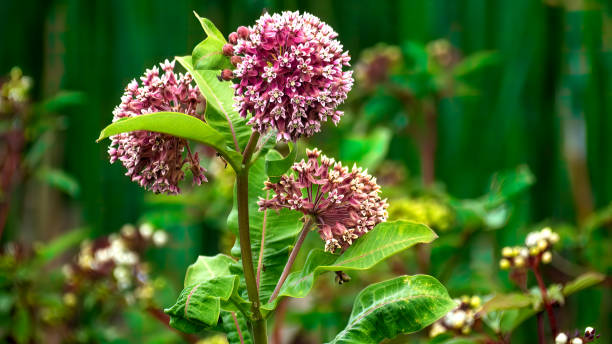
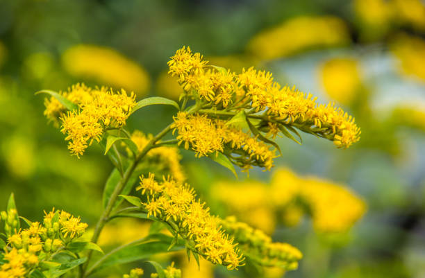

Common Native Plant Species

Milkweed
The single most important plant for monarch butterflies, since their caterpillars can eat nothing else. Milkweed grows 3 to 5 feet tall, produces fragrant pink-purple flower clusters from June through August, and supports over 450 species of insects in total.

Black-Eyed Susan
A hardy flower that attracts bees and butterflies. It blooms from June through October, providing one of the longest nectar seasons of any native wildflower. After flowering, the seed heads feed goldfinches and other small songbirds well into winter.

Goldenrod
Provides late-season nectar for pollinators. Often unfairly blamed for hay fever, the real culprit is ragweed. Goldenrod is one of the most valuable late-season nectar sources in New York and supports more insect species than nearly any other perennial wildflower.

New England Aster
Tall purple blooms appear from late August through October, providing crucial fuel for monarch butterflies during their long migration to Mexico. New England aster also hosts over 100 species of native bees and pairs beautifully with goldenrod in pollinator gardens.

Wild Bergamot
A member of the mint family with shaggy lavender flowers that bloom in midsummer. Wild bergamot is a magnet for hummingbirds, bumblebees, and hummingbird moths thanks to its tubular flowers. The leaves give off a strong oregano-like scent when crushed.

Cardinal Flower
One of New York's most striking native plants. Cardinal flower produces brilliant red spikes that bloom from July through September. Its tubular shape is specifically adapted for ruby-throated hummingbirds, which are nearly the only pollinators able to reach its nectar.